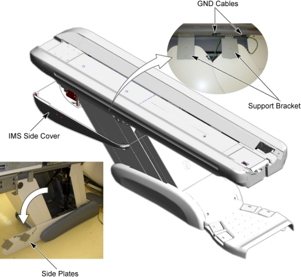
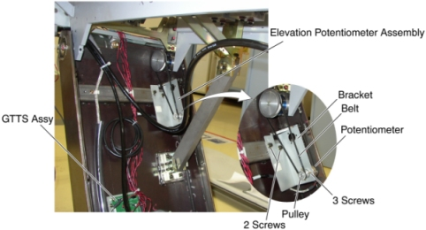
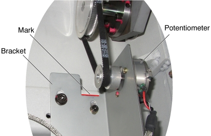

Operating Documentation
Direction 5196839-800, Rev# 6
RT16 and Xtra Service Info Adv
Operating Documentation |
| Required Persons | Preliminary Reqs | Procedure | Finalization |
|---|---|---|---|
| 1 |
| Last Revised: | 17 April 2008 |
| Item | Qty | Effectivity | Part# | Manufacturer | |
|---|---|---|---|---|---|
| Elevation Potentiometer (5127774) | 1 | - | - | - | |
Raise the Table to maximum height.
Move the Cradle and IMS to OUT limit position.
Remove power from Table by turning off 120VAC, Axial Drive and HVDC switches on Service Switch Panel.
Remove IMS side cover (right).
Disconnect 2 GND cables from the Table frame.
Remove 2 upper support brackets of the side plates (right) by unscrewing its 2 (x2) screws, and open the side plates.
Illustration 1: Table Covers Removal

Cut any tie-wraps holding the potentiometer cable to the Table frame.
Disconnect the potentiometer cable connector from the GTTS assy.
Illustration 2: Elevation Potentiometer Removal

Mark the bracket position for re-installation.
Loosen 2 screws that fasten the Potentiometer assy to the Table frame, to remove the tension from the potentiometer belt, and remove the belt from the potentiometer pulley.
Unscrew the 2 screws, and remove the potentiometer assy from the Table.
Illustration 3: Elevation Potentiometer

Unscrew 3 screws holding the potentiometer to the bracket, and remove the potentiometer from the bracket.
Attach the new potentiometer to the bracket using the 3 screws.
Position the new potentiometer with bracket on the Table frame.
Re-connect the potentiometer cable connector, and fasten the cable to the Table frame with tie-wraps.
Power up the Table from the Service Switch Panel.
Rotate the potentiometer pulley until a LED (POT_ADJ UP) on the GTCB Assy is ON.
Position the belt on and around the pulley with the LED on.
Align the surface of the bracket with the mark, and tighten the 2 screws, to fasten the potentiometer assy , with tension on the belt.
Perform Elevation Characterization.
Raise and lower the Table a couple times and verify that Table movement is operating normally.
Turn off all 3 switches (Axial Drive, HVDC, 120VAC), and re-install the Table Covers.